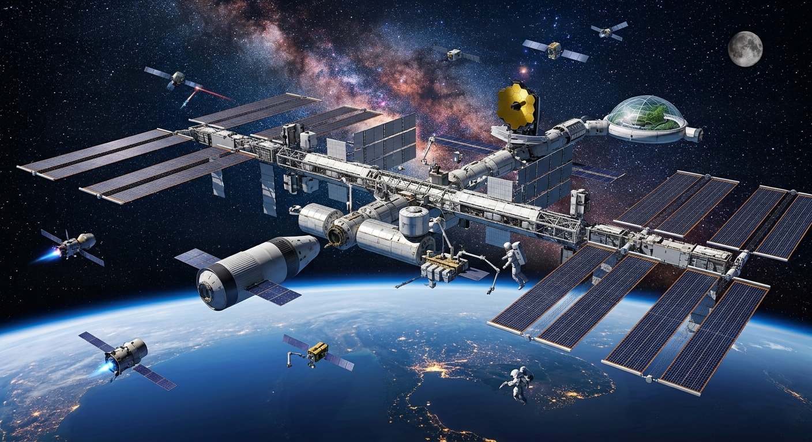

เทคโนโลยีอวกาศและการประยุกต์ใช้
ในยุคปัจจุบันมนุษย์ต้องอาศัยเทคโนโลยีหลายอย่างเพื่ออำนวยความสะดวกในการ ดำเนินชีวิต ซึ่งเราอาจไม่ทันรู้ตัวว่าเทคโนโลยีเหล่านี้ได้ถูกพัฒนาหรือประยุกต์มาจากความรู้ ทางด้านเทคโนโลยีอวกาศ เช่น ดาวเทียม ซึ่งนำมาใช้ประโยชน์ในหลาย ๆ ด้านทั้งการคมนาคม การสื่อสาร การสำรวจพื้นที่ต่าง ๆ ทำให้สิ่งมีชีวิตบนโลกเกิดความปลอดภัยและเพื่อการดำรงชีวิต อย่างสะดวกสบาย ดังนั้นการพัฒนาเทคโนโลยีอวกาศจึงไม่ได้มีประโยชน์เพียงเพื่อการสำรวจ วัตถุท้องฟ้าเพียงอย่างเดียว และนี่คงเป็นตัวอย่างหนึ่งที่ช่วยคลายความสงสัยให้กับใคร อีกหลายคนที่อาจเคยตั้งคำถามว่ามนุษย์ได้อะไรจากการทุ่มเทงบประมาณมหาศาลเพื่อไปสำรวจ สิ่งต่าง ๆ นอกโลก ซึ่งคำตอบที่ได้คือเทคโนโลยีที่ถูกพัฒนาขึ้นนั้นได้นำมาประยุกต์เพื่อใช้กับ มนุษย์บนโลก ทำให้เกิดความสะดวกสบายและความปลอดภัยต่อชีวิต
ㅤ